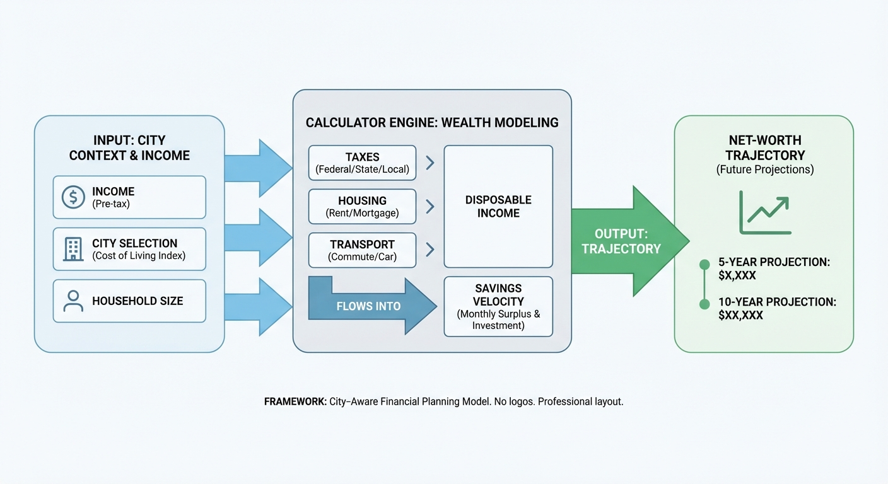

One Salary, Three Futures: How the Same Income Produces Totally Different Wealth Paths by City
Income is not destiny. City-level cost structure often determines whether earnings compound or leak out through fixed frictions.
The most expensive mistake in personal finance is assuming income tells the whole story. Two households can earn the same salary, work in the same industry, and have similar spending habits, yet end up in radically different wealth positions after ten years. The difference is not discipline alone. It is geography. Where you live changes your housing cost structure, tax drag, inflation exposure, mobility options, and savings velocity. In other words, it changes your compounding rate.

This is why “I make six figures” often fails as a wealth predictor. In one city, six figures can buy margin. In another, it can buy stress. The paycheck is the same; the future is not. The useful question is not “What do you earn?” The useful question is “What does that income convert into after local costs, taxes, and time?”
This post breaks down that conversion problem in a way you can model. We will look at three city scenarios for the same salary, show how small monthly differences create large ten-year gaps, and explain how to tie this into a calculator framework that gives users realistic trajectory projections. The goal is not to tell everyone to move. The goal is to make location economics explicit before major life decisions lock in.
The Core Mechanic: Income Is a Flow, Wealth Is a Residual
Wealth builds from residual cash flow. Residual means what is left after taxes, fixed living costs, debt service, and recurring obligations. If your residual is high and consistent, wealth accumulates even without perfect investing. If your residual is thin or volatile, wealth stalls despite strong gross income.
City economics shape residual more than most households realize. Housing and transportation usually dominate the difference, but local tax structures, childcare costs, insurance premiums, and service inflation also matter. The result is that a household earning $150,000 can save 25% in one city and struggle to save 5% in another, even with similar consumption standards.
Federal and regional data consistently show cost divergence across U.S. metros. The Bureau of Economic Analysis regional price parity framework exists precisely because one dollar does not buy the same basket in every place (BEA, 2024). The Bureau of Labor Statistics CPI shelter components also highlight how housing pressure can dominate household budgets (BLS, 2025). For wealth modeling, this means national medians are useful context, but local conversion rates determine outcomes.
One Salary, Three City Futures: A Practical Model
Let us model a single household earning $150,000 gross annual income, with no children at start, stable employment, and moderate investment behavior. We will compare three city archetypes:
City A: High-cost coastal metro
City B: Mid-cost growth metro
City C: Lower-cost secondary metro
We are not naming exact cities because the point is structure, not city rankings. The parameters are realistic enough to show direction.
Assumption set:
Gross salary: $150,000
Effective combined tax and payroll burden differs by state/local setting
Housing: rent in years 1-3, possible home purchase years 4-10
Investing: diversified broad-market portfolio
Emergency reserve target: 6 months essential spending
Year-1 snapshot outcomes:
City A residual savings potential: about $900 per month
City B residual savings potential: about $2,100 per month
City C residual savings potential: about $3,100 per month
The gross salary is identical. Monthly residual differs by $2,200 between City A and City C. Over one year, that is a $26,400 difference before investment returns. Over ten years, with conservative compounding and periodic raises, the gap becomes life-shaping.
Compounding the Gap: Ten-Year Projection
To keep it simple, assume average annual portfolio return of 6.5% net of fees, periodic salary growth of 3%, and cost inflation tracking local pressure (higher in City A for housing and services). The exact numbers will vary. The pattern is durable.
Illustrative ten-year outcomes:
City A: Net worth growth constrained, with high sensitivity to housing shocks and job interruption.
City B: Stable accumulation, moderate flexibility for home purchase and career pivot.
City C: Faster wealth accumulation, stronger liquidity buffer, optionality for entrepreneurship or reduced work intensity.
In most runs with these parameters, City C can finish with 1.8x to 2.4x the investable assets of City A despite identical starting salary and similar lifestyle intent. That is the geo-arbitrage effect in plain terms: not just cheaper rent, but higher compounding fuel.
This is why city choice can act like an invisible second income. When cost structure is lower and taxes are more favorable, savings rate rises without promotions. In long horizons, savings rate changes often matter more than incremental salary bumps.
Housing: The Biggest Divergence Engine
Housing is usually the single largest source of path divergence. In high-cost metros, a household may devote 35% to 50% of take-home pay to housing and related costs. In lower-cost metros, the same household can keep housing closer to 20% to 30%. That spread directly affects investable surplus.
Mortgage regime amplifies this. In a 6% mortgage environment, ownership transition is costlier everywhere, but the burden is not equal. A high-cost market buyer may need larger absolute debt and larger down payment. A lower-cost market buyer can often preserve more liquidity after purchase, reducing fragility. That difference changes not only wealth growth but also risk tolerance and life flexibility.
People often frame housing as “rent money wasted versus equity gained.” This framing is incomplete. The real comparison is total housing carry plus flexibility value plus opportunity cost of tied-up capital. In some high-cost markets, renting while investing surplus can outperform forced ownership under constrained cash flow. In lower-cost markets, ownership can become accretive sooner. City context decides which strategy is superior.
Taxes and Friction: Quiet but Powerful
State and local tax structures quietly reshape wealth paths. Two households with identical federal obligations can diverge meaningfully once state income tax, property tax, sales tax, and local fees are included. Add commuter costs, parking, insurance differentials, and service pricing, and monthly friction grows.
Tax drag is especially important for higher earners deciding whether a raise in one location is truly a raise after all-in costs. A nominal compensation jump can be neutralized by higher effective taxes and housing carry. This is why relocation decisions should be modeled on after-tax, after-cost residual income, not gross salary headlines.
For wealth calculators, this suggests a critical UX rule: never show location-based comparisons on gross salary alone. At minimum, include estimated local tax and housing friction modules, even if simplified. Otherwise, users are optimizing on incomplete information.
Career Path Interaction: City Premium vs Cost Penalty
High-cost cities often come with stronger career upside, denser networks, and higher compensation ceilings. That advantage can outweigh cost penalties for some profiles, especially in fields where top-tier opportunities are location-concentrated. The mistake is assuming that upside applies equally to everyone at all times.
A useful model is expected value, not guaranteed value. If the probability-weighted compensation upside is high and timeline is short, high-cost exposure can be rational. If upside is uncertain and timeline extends, cost drag can dominate. Many households stay in expensive markets because of upside narratives that made sense five years earlier but are no longer statistically likely.
This does not imply abandoning ambition. It implies periodic re-underwriting of the city premium thesis: Is the location still delivering outsized career returns net of cost pressure? If yes, stay intentionally. If not, transition intentionally. Drift is expensive.
Life-Stage Multipliers: Same City, Different Outcome
City effects are nonlinear across life stages. A dual-income household without dependents may tolerate high-cost markets with manageable stress. Add children, caregiving responsibilities, or health constraints, and cost sensitivity rises sharply. Childcare, school choices, space requirements, and scheduling complexity can flip the location equation in under two years.
That is why static “best city for wealth” lists are often misleading. The better lens is stage-adjusted fit. A city can be optimal for career acceleration in one stage and suboptimal for family wealth resilience in another. Wealth planning should adapt to stage transitions rather than defend old identity commitments.
For tool builders, this is a product opportunity. Scenario templates by life stage can make projections far more relevant than generic rank outputs. Users should be able to toggle from “single professional path” to “family path” and immediately see how location effects compound differently.
One Salary, Three Futures: Detailed Year-by-Year Dynamics
To make the model practical, break the ten-year path into three phases.
Phase 1 (Years 1-3): Foundation. The key variable is savings-rate establishment. City A households may need strict fixed-cost controls to keep positive investment flow. City B and C households can often establish stronger reserves quickly.
Phase 2 (Years 4-7): Asset Acquisition. This is where housing decisions and career moves dominate. High-cost markets can absorb liquidity quickly during down payment and move cycles. Lower-cost markets may allow ownership while preserving investment continuity.
Phase 3 (Years 8-10): Optionality Window. Households with sustained surplus enter optionality mode: business launch, sabbatical, reduced hours, strategic relocation, or accelerated retirement contributions. Households with thin surplus remain in stabilization mode despite similar gross income histories.
The striking point is how early small differences matter. A recurring $1,500 monthly savings gap in the first three years can cascade into six-figure divergence by year ten when compounded and layered with lower stress costs.
Where People Misread Geo-Arbitrage
Myth 1: “Just move somewhere cheap and you win.” Not always. Poor labor market fit, lower career ceiling, social isolation, or lower service quality can offset cost gains.
Myth 2: “High-cost means poor wealth outcomes.” Not always. Some roles produce enough compensation acceleration to dominate cost drag.
Myth 3: “Remote work solves everything.” Partially. Remote options can reduce location constraints, but compensation bands, promotion visibility, and long-term career capital can still be location-sensitive by company and industry.
Myth 4: “If peers stay, staying is safe.” Peer behavior is social proof, not financial proof. Your household balance sheet and risk profile are the decision basis.
Good geo-arbitrage is not cheapness for its own sake. It is strategic mismatch reduction between income path and cost structure.
How to Build a City-Aware Wealth Calculator
If this topic aligns with your product, here is practical calculator logic that avoids most common errors.
Input layer: gross income, household size, debt profile, rent/ownership status, target savings rate, career growth assumption.
Location layer: local housing cost index, tax assumptions, essential service cost multipliers, transport cost assumptions.
Projection layer: annual residual cash flow, reserve trajectory, investment balance growth, probability-weighted career income scenarios.
Output layer: ten-year net worth range, liquidity resilience score, optionality milestones by year, and “same salary alternate-city” comparisons.
Explainability layer: transparent decomposition of why outcomes differ: housing, taxes, childcare, transport, and career assumptions.
This architecture makes the product feel less like a static rank machine and more like a decision engine. Users do not just learn where they stand. They learn what levers change their trajectory.
A Realistic Decision Framework Before You Relocate
Use a five-part relocation scorecard.
1. Income durability: How stable is your salary path in each location?
2. Cost structure: What is all-in essential monthly burn in each location?
3. Savings velocity: What monthly surplus is realistically investable?
4. Resilience: How many months of runway can you maintain?
5. Lifestyle fit: What non-financial factors affect sustainability and wellbeing?
If two locations are close financially, lifestyle fit should break ties. If one location dominates financially and remains acceptable on quality-of-life factors, hesitation usually has identity roots, not economic roots. That is normal, but it should be named explicitly.
What This Means for Young Professionals
Early-career years are compounding-sensitive. A high-cost city can still be rational if it meaningfully increases skill density, network quality, and earning trajectory. But the strategy should have checkpoints. If earnings growth does not materialize as expected within a defined window, reevaluate location. Hope is not a strategy.
Young professionals often underestimate fixed-cost lock-in. Signing into expensive housing or lifestyle commitments too early can reduce career optionality by forcing conservative job choices. Keeping burn rate flexible during early acceleration years is one of the highest-return decisions available.
What This Means for Families in Mid-Career
Mid-career households usually face the sharpest location tradeoffs because obligations rise while flexibility narrows. Housing size, schooling decisions, eldercare, and career peak pressure can collide. In this stage, city decisions are less about maximizing prestige and more about preserving long-run resilience without sacrificing opportunity.
The key is to avoid binary framing. It is not always “stay or leave forever.” Hybrid strategies are increasingly viable: preserve career anchors in high-opportunity markets while relocating core household spend to lower-friction markets over time. Technology and flexible work models make this more feasible than in prior decades.
Speculation, Clearly Labeled
Speculation, clearly labeled: Over the next five years, wealth outcomes by city may diverge further as mortgage rates, insurance costs, and local service inflation remain uneven across regions. Households that actively optimize location-cost mismatch are likely to outperform peers with similar incomes who rely on static assumptions about where “good jobs” must be located.
The Bottom Line
The same salary does not buy the same future. In wealth planning, geography is not background noise. It is a primary variable. Ignore it, and you can work hard for a decade and still feel financially stuck. Model it, and you can convert the same income into dramatically different levels of resilience and freedom.
That is the real power of city-aware wealth analysis. It turns lifestyle conversation into compounding conversation. Once you see that clearly, location stops being an identity debate and becomes what it always was: a capital allocation decision with human consequences.
A Deeper Numeric Example: Same Raise, Different Outcome
Now let us add a common real-world twist. Assume each household receives a 10% raise in year three, moving gross salary from $150,000 to $165,000. Intuitively, this should improve all paths similarly. In practice, the conversion rate differs by city.
In City A, much of that raise can be absorbed by housing repricing, tax drag, and service inflation. In City B, a larger share becomes investable surplus. In City C, the same raise can accelerate both reserve building and long-term investing simultaneously. The raise is identical. The wealth effect is not. This is why salary negotiation and location strategy should be designed together, not separately.
A useful metric here is raise conversion ratio: the percentage of incremental gross income that lands in investable surplus after local taxes and cost structure. In high-friction metros, this ratio can be surprisingly low. In lower-friction metros, it can be dramatically higher. Over ten years, raise conversion ratio can matter more than the absolute number of raises.
The Hidden Variable: Lifestyle Floor, Not Lifestyle Ceiling
Most planning conversations focus on lifestyle ceiling, meaning what households can afford at peak earnings. The better predictor of wealth durability is lifestyle floor, meaning the minimum recurring cost required to maintain stable functioning. Location determines that floor more than social media narratives admit.
If your lifestyle floor is high, even a temporary income dip can force defensive decisions: pausing investing, liquidating assets, taking expensive debt, or delaying health and family priorities. If your lifestyle floor is moderate relative to income, the same shock becomes manageable. Wealth is not only about upside capture. It is also about downside survivability.
This is where many high-income households get trapped. They optimize for visible quality upgrades but under-optimize for floor flexibility. In expensive metros, this can produce a paradoxical profile: high earnings, strong credentials, low real optionality. The fix is often not dramatic. It is disciplined floor management plus city-aware budgeting.
Transportation and Time Costs: The Budget Line You Cannot See
City economics are not only about rent and taxes. Commute structure can alter wealth trajectories by consuming both money and recoverable time. Long commutes increase direct costs and reduce capacity for side projects, upskilling, second income streams, and even low-cost wellness habits that prevent later expenses.
When households compare city options, they often price transportation as fuel and parking only. A stronger model includes time-cost valuation: what additional commute hours displace in terms of career capital, childcare logistics, and health maintenance. Time-cost valuation is imperfect, but ignoring it understates the true cost of location choices.
In some cases, a higher-rent location near work can outperform a cheaper distant location once commute drag is fully valued. In other cases, remote work plus lower-cost housing dominates. The right answer is path-specific, which is exactly why calculators should include commute-time sensitivity toggles rather than static assumptions.
Insurance and Climate Risk Are Joining Housing as Major Divergence Drivers
Another emerging variable is insurance pressure. In some regions, homeowners insurance and risk-related costs are rising quickly, changing the all-in carrying cost of ownership. Households focused only on purchase price can miss this compounding burden. Over long horizons, rising risk-transfer costs can materially reduce wealth accumulation even when income is stable.
For planning models, this suggests adding a location risk premium assumption in ownership scenarios. Not as fear marketing, but as realism. If one city has lower headline housing cost but higher long-run risk costs, the apparent affordability advantage may narrow.
How to Stress-Test “Stay vs Move” Before You Commit
A robust decision process should model at least three scenarios:
Base case: expected income growth and expected local inflation.
Conservative case: slower income growth, higher essential-cost inflation, and one temporary income shock.
Upside case: faster career progression and stable cost growth.
For each scenario, compare five outputs: monthly investable surplus, reserve runway, debt-service ratio, net-worth trajectory, and optionality milestones (home purchase, business launch, parental leave flexibility, or retirement acceleration). If one location only wins in upside case but fails in conservative case, it is a high-volatility bet. That can be fine if deliberate. It is dangerous if unrecognized.
Most households run only one emotional scenario. That is the planning mistake. Scenario spread matters more than point estimates when life has uncertainty.
What Companies and HR Teams Miss About Compensation Fairness
From an employer perspective, location-adjusted pay frameworks are often debated as talent strategy. But there is also a financial-health angle. When compensation policies ignore local conversion dynamics, households with equal salaries can experience very different stress burdens. That affects retention, burnout risk, and performance consistency.
Companies do not need to solve every household challenge, but transparent location logic helps. Employees make better career decisions when they can estimate real after-cost outcomes instead of interpreting gross salary bands in a vacuum. Over time, this can reduce mismatch churn and improve mutual fit.
How This Connects to Wealth Ranking Products
If your product logic includes rank and percentile views, city conversion should not be a side widget. It should be part of the core engine. A user with $120,000 income and strong local conversion may be on a healthier path than a user with $180,000 and weak conversion. Gross-income badges cannot capture that.
A strong implementation pattern is “Income-to-Wealth Conversion Score.” It measures how efficiently current income converts into investable surplus after local frictions. Combined with wealth percentile, this gives users both position and momentum. Position says where you are. Momentum says where you are likely headed if current structure continues.
This also improves user trust. People can understand why someone with lower income may have stronger trajectory score due to lower fixed-cost burden and better savings velocity. It turns finance from status theater into systems thinking.
Three Policy-Relevant Observations
First: housing affordability is not just a shelter issue; it is a wealth distribution mechanism. When housing costs consume larger shares of income, wealth accumulation slows for otherwise high-earning households.
Second: tax and fee complexity can create hidden regressivity within similar income bands across regions, especially when combined with fixed local costs.
Third: mobility frictions can reduce labor-market efficiency by keeping workers in suboptimal location-income matches due to transition costs.
These observations matter for public policy, but they also matter for individual planning. Households that recognize these forces early can make proactive decisions rather than reactive ones.
Common Objections and Better Responses
Objection: “Moving is too disruptive to be a financial decision.”
Response: Correct. It is a life decision first, but financial modeling helps avoid preventable tradeoffs.
Objection: “My career requires this city.”
Response: That may be true now. Revalidate periodically because career geography can change faster than identity assumptions.
Objection: “I can out-earn the cost problem.”
Response: Possible. Test raise conversion ratio and stress scenarios before assuming growth outruns friction.
Objection: “Lower-cost cities sacrifice quality of life.”
Response: Sometimes yes, sometimes no. Quality is multidimensional and should be measured directly, not inferred from brand prestige.
A 12-Month Playbook for Households
Month 1: Build a city-normalized budget. Separate essential and flexible categories.
Month 2: Calculate raise conversion ratio and savings velocity at current location.
Month 3: Run two alternate-city scenarios with realistic tax and housing assumptions.
Months 4-6: Improve local structure first: renegotiate fixed costs, optimize transport, increase reserve automation.
Months 7-9: If relocation remains attractive, test with a short pilot period or hybrid arrangement where feasible.
Months 10-12: Commit to the highest-confidence path and lock quarterly review metrics.
This timeline keeps decision quality high while reducing emotional overreaction. It also preserves optionality if market conditions change mid-year.
Final Perspective
Income is necessary but not decisive. Conversion is decisive. The same salary can buy three different futures because cities are financial systems, not just addresses. Once you model that explicitly, you stop asking “Is my income enough?” and start asking “Is my structure compounding?” That shift is where durable wealth planning begins.
Key Takeaways
Equal salaries can produce radically different wealth outcomes once local costs and taxes are modeled.
Housing and recurring fixed costs are usually the biggest divergence drivers over ten-year horizons.
Geo-arbitrage is powerful when matched with career durability and life-stage fit, not just low rent.
City-aware calculator logic improves planning quality by converting income into realistic trajectory outcomes.

Source List
Bureau of Economic Analysis (2024). Regional Price Parities by state and metro area
Bureau of Labor Statistics (2025). Consumer Price Index program overview
U.S. Census Bureau (2024). American Community Survey program data
Federal Reserve (2023). Changes in U.S. family finances from 2019 to 2022
Freddie Mac (2026). Primary Mortgage Market Survey